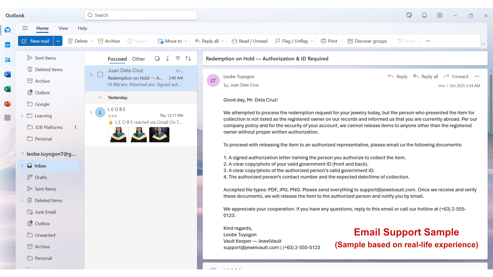
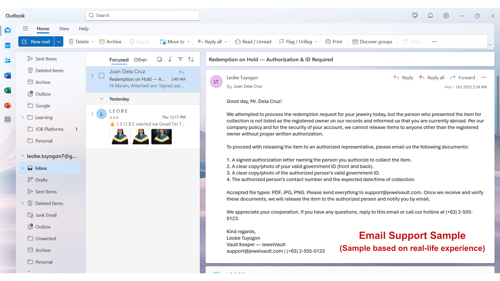
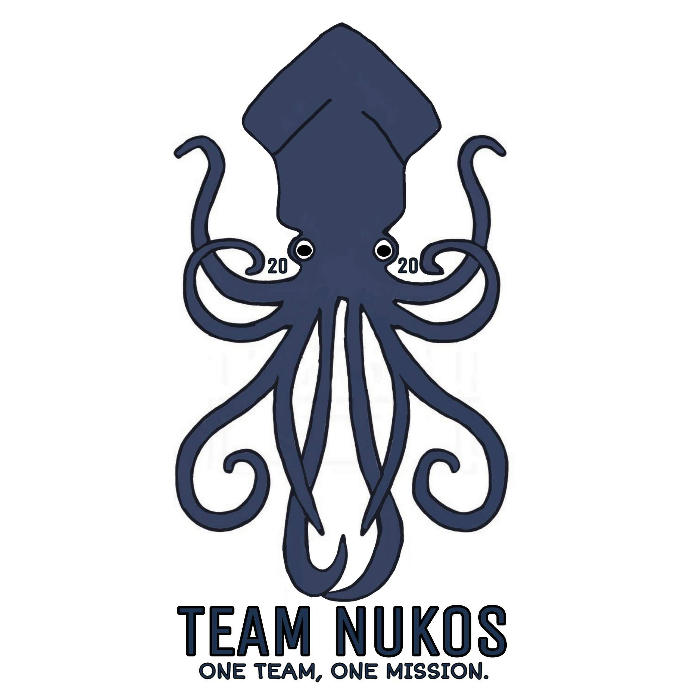
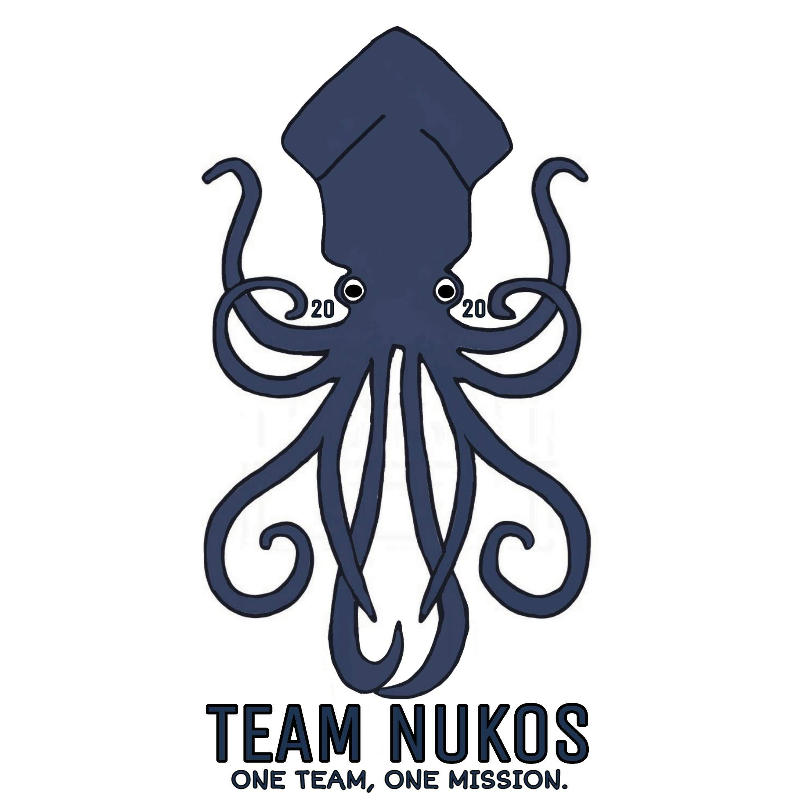

Portfolio Samples
Admin Support | Data Entry | Email Management

The Challenge:
In my previous role in a warehouse setting, I handled delivery tracking and communications manually, which sometimes led to missed updates, unclear records, and delays in addressing stock shortages or customer follow-ups.
What I Did:
- Created a structured spreadsheet with columns for delivery status, dates, branch names, PO/Invoice/DR numbers, and remarks.
- Used checkboxes to visually indicate delivery and return status.
- Organized a professional inbox using Microsoft Outlook, with folders for Clients, Finance, Training, and Projects.
The Result:
The system made it easier to:
- Monitor delivery progress and return status at a glance.
- Transformed a cluttered inbox into a structured workspace, making communication more efficient and task management easier.
- Strengthened overall workflow by combining logistical tracking with organized digital communication.
 

 
